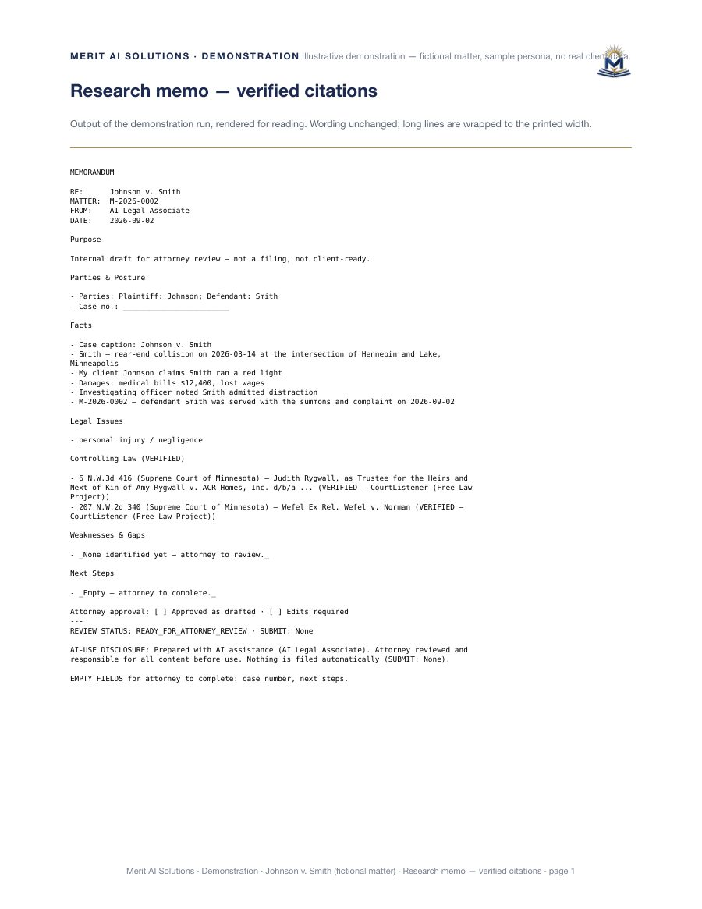

An AI legal associate for work you review
The product includes deadline-related records; deadline calculations require attorney verification. The attorney approves every output and remains the author.
Work product, not answers
Not verified — Ask a general assistant a legal question and you get prose you have to check yourself. Hand this associate a matter and you get the draft, the authorities it pulled, the deadline calendar computed from your own dates, and the document in eFile shape, all waiting for your review.
The product maintains bounded matter records for attorney review.
Not a law firm, not an oracle
- Merit AI Solutions is not a law firm and does not provide legal advice
- The attorney reviews and approves every output and remains the author
- A standalone citation gate is available for separate checks; it is not guaranteed on every desk path.
- SOC 2 and ISO 27001 are not held and are not claimed
How it differs from the two tools you may already be using
General AI
Not verified — A general assistant writes in a confident voice with no receipt for whether an authority exists. A standalone citation gate is available for separate checks; it is not guaranteed on every desk path. The full comparison →
Legal research software
Research tools cover one step of the matter. The product includes deadline-related records; deadline calculations require attorney verification. The full comparison →
The twelve systems
A day of associate work, ready to review
Research, with sources
A standalone citation gate is available for separate checks; it is not guaranteed on every desk path.
Drafts on your forms
The product can prepare drafts for attorney review.
A deadline calendar
The product maintains bounded matter records for attorney review. The product includes deadline-related records; deadline calculations require attorney verification.
Documents in eFile shape
Flattened and checked, filed only when you approve the filing.
Client updates
The product maintains bounded matter records for attorney review.
Your time record
The output is not a billing statement.
Published measurements
A finished output, with limits visible
This fictional memo is demonstration output, not client work. It shows the form of a deliverable an attorney receives to review rather than a chat answer presented as final work.

Minnesota firms with one to six attorneys
Small enough that the attorney is doing the associate's work, large enough that the work is real. The product can prepare filing materials for attorney review; the attorney manually submits them.
One conversation, then your first matter
Service-policy materials describe support processes; no service-level guarantee is stated. Not verified — Delivery is up to five business days from the date the agreements are signed, and the period ends when you accept the configuration.
Pilot offer: not verified
Not verified — The pilot month is free for the first three firms; after that the pilot month is $1,500, and if you sign on, the full $1,500 is credited toward your second month.